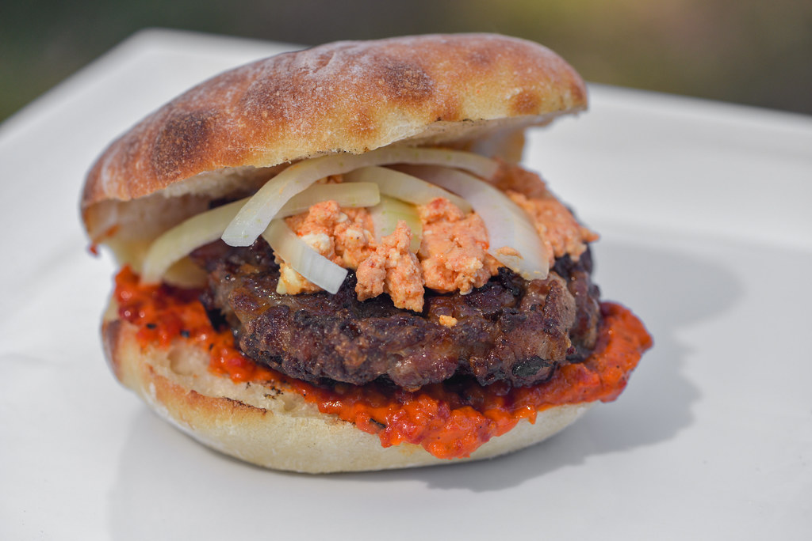

Pljeskavica
Go Home

A pljeskavica is a popular Balkan grilled meat patty, often called the "Serbian hamburger,"
made from a spiced mix of minced beef, pork, and/or lamb, resembling a large, juicy burger patty.
Ingredients
- Mixed ground meat (Beef, Pork, Lamb)
- Chopped or Grated onion
- Young onion
- Garlic
- Salt
- Pepper
- Baking soda
- Bun
- Cream
Steps
- Combine Ingredients in a large bowl
- Marinate
- Form Patties
- Cook on a grill 3-4 minutes per side
- Serve in a lepinja (bun)